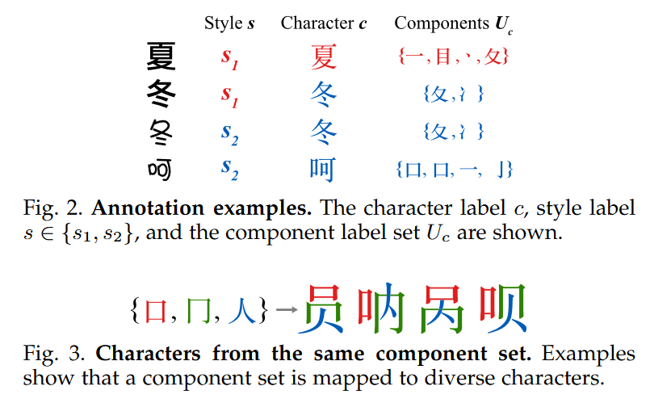
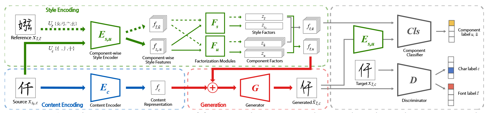
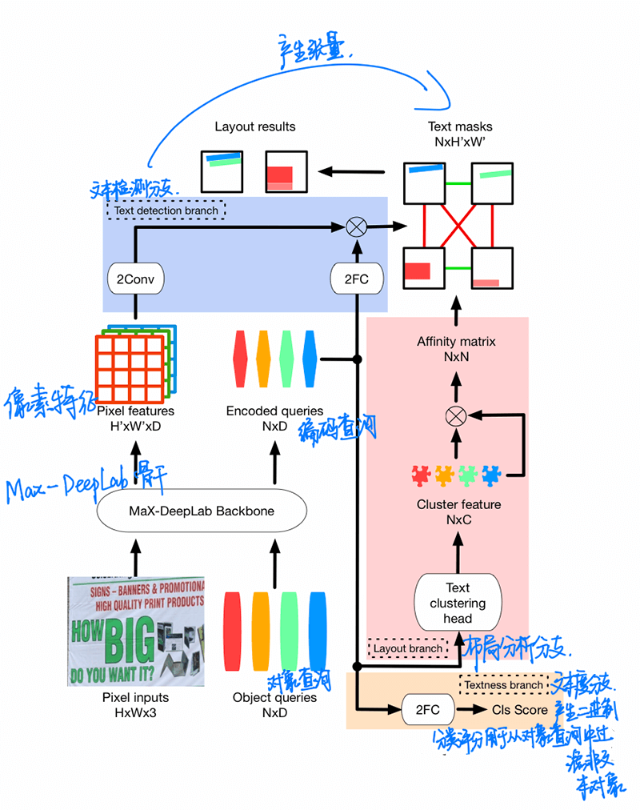
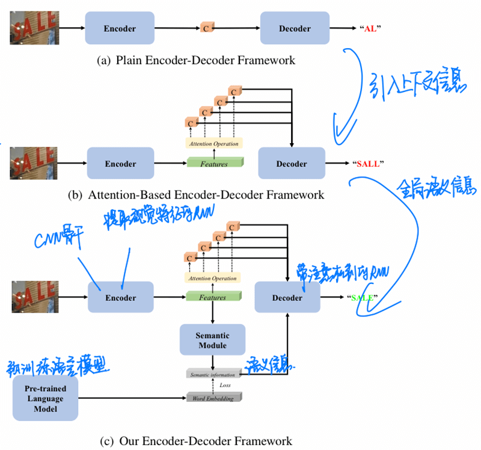
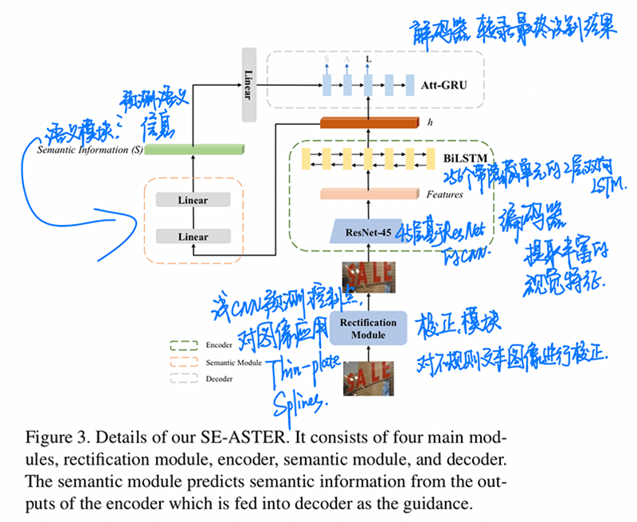
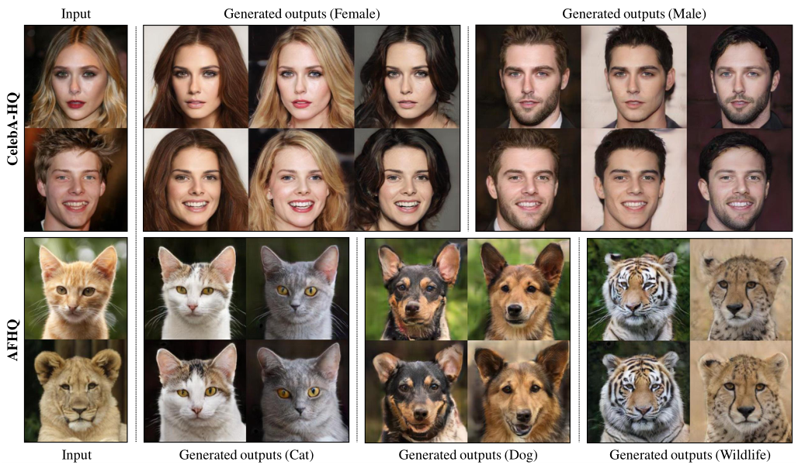
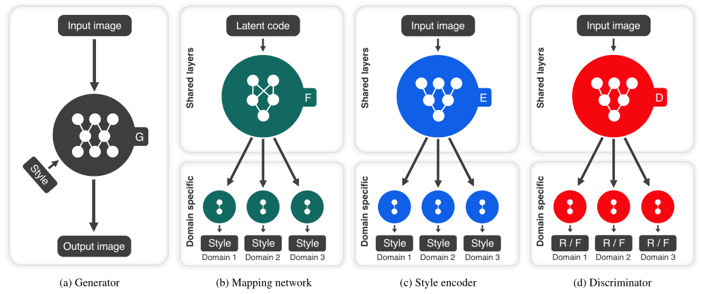

前言
又过了两周，看了几篇论文，感觉总结得太晚有几篇已经忘了看了个什么玩意儿了😅。
还是感觉代码很重要啊！服务器也搭了，pytorch 也入门了，真的该开始代码复现了。感觉泛读多篇论文，不如精读一篇？李宏毅的代码作业我觉得也该尝试一下了！不过这个学习思路跟导师说的泛读论文有点相悖就是了。
不知道上次反 push 导师是个什么效果，反正现在组会是越来越长了，希望我的同门们不要怪罪我😅。上周组会开始导师叫凡哥讲了他的 Electronics 小论文大概是怎么水的，下周组会又是挑出一篇论文在组里讨论，那就继续读读读吧。
这篇博客是总结这两周看的论文，其实我很早就有一点想法了，只是不知道这个想法好不好使。过段时间要不总结一下再反 push 一下导师，说说自己最近的想法和学习情况吧。
对了，由于我博客发的有点多，感觉我的博客文章有点散乱了，是时候找个时间好好整理一番了，对了电脑硬盘快爆了也该整了。
念英语啊，下次一定呜呜呜😭。
快点水完论文想学前端 UE 操作系统呜呜呜😭。
学期快过半了，暑假放我回家在师大好好学习吧呜呜呜😭。
正文
自己瞎看的
Few-shot Font Generation with Weakly Supervised Localized Representations
资源
原文：
代码：
- clovaai/lffont: Official PyTorch implementation of LF-Font (Few-shot Font Generation with Localized Style Representations and Factorization) AAAI 2021 (github.com)
- clovaai/lffont: Official PyTorch implementation of LF-Font (Few-shot Font Generation with Localized Style Representations and Factorization) AAAI 2021 (github.com)
内容
giao，太早以前看的，看笔记都快回忆不出来了，如果是在感兴趣的话，该重看一遍了。
-
为了搞定汉字的字体风格迁移，设计了一种新的字体生成方法，学习本地化样式，基于组件的样式表示，而不是通用样式。
-
字体生成，就是从极少的参考字形中提取复杂的局部特征：局部笔画、衬线、子字符的大小。汉字的组成部分太多了哟，难顶。
{kind=link}

工作就是为汉字系统的所有 19514 字符设计了 371 个组件来表示它们。
{kind=link}

设计的模型叫做 LF-Font 分成多个部件：
- Content Encoding 内容编码 从输入 中提取出内容表示
- Style Encoding 风格编码器 提取风格
- Generation 生成器 从 和 合成目标字形
- 训练共享模块
回忆不出来了 orz，生成模型的评价指标似乎还是主观的。
The SYNTHIA Dataset: A Large Collection of Synthetic Images for Semantic Segmentation of Urban Scenes
资源
IEEE
原文
官网
内容
其实跟想研究的方法无关 orz，但是是以 Unity 生成的城市场景语义分割的数据集，爷青回。用于给自动驾驶训练。
这个有点想自己跑一遍。SYNTHIA 带有生成的类注释，将 SYNTHIA 与公开可用的城市图像结合使用。
包含 13 个像素级语义级注释：天空、建筑物、道路、人行道、围栏、植被、车道标记、栏杆、汽车、交通标志、行人、自行车。可以自由调整这些类的属性等。
213400 张合成图像，快照和视频序列。从多个视角模拟不同的季节、天气和照明生成图像。
Towards End-to-End Unified Scene Text Detection and Layout Analysis
资源
原文：
代码：
内容
这个当时居然写了蛮详细的笔记，好吧。
- 提出了一个新的模型 Unified Detector，试图将场景文本检测与文档布局分析结合起来。引入了一个新的分层场景数据集——HierText：第一个具有自然场景和文档中文本分层注释的数据集，拥有高质量的单词、行、段落级注释。
- 就是把文档中的布局分析框定为检测和分割任务
- 将布局分析引入场景文本域。
{kind=link}

-
架构：
- Backbone：The MaX-DeepLab，沙漏风格的 CNN 交替堆叠和提出的 dual-path transformer CNN 从粗分辨率到精细分辨率迭代编码特征，从而可以产生高分辨率的特征。
- Text detection branch
- Layout branch
- Textness branch：两个全连接层，1 个 sigmoid 函数，生成二进制分类函数
-
使用最近提出的 指标作为主要评估指标：
-
损失函数：
- ：Text detection loss
- ：Layout analysis loss
- ：Instance discrimination loss
- ：由 MaX-DeepLab 产生
感觉比较牛逼就读的仔细一些的
这些都发了独立的推文，也列出来吧。
Paper-Text Recognition in the Wild-A Survey
见：[Paper-Text Recognition in the Wild-A Survey-Zi-Zi's Journey](..//Paper-Text Recognition in the Wild-A Survey/)
导师要求看的
SEED-Semantics Enhanced Encoder-Decoder Framework for Scene Text Recognition
资源
原文：
代码：
内容
- 目前都是用 E-D 的结构处理场景文本检测中视角失真、曲线形状的难题，但对图像模糊、光照不均、字符不完整不太好使。
- 其他人都是使用局部视觉特征，没有显式的全局语义信息。我们提出了语义增强 E-D 集成了最先进的 ASTER。
- 将文本识别视为一个跨模态任务。从预训练的语言模型中获取单词嵌入，就是把 NLP 引入其中啦。
- 现有的深度学习方法：CTC、Attention，而对于不规则的文本识别：STN、Attention。
- 利用语义：CNN、语言模型、预训练的语言模型，使用基于 skip-gram 的 FastText 作为预训练的语言模型。
{kind=link}

{kind=link}

StarGAN v2-Diverse Image Synthesis for Multiple Domains
资源
内容
StarGAN v2：多域的不同图像合成
{kind=link}

- 提出了一个新的 image-to-image 模型：StarGAN v2，保证生成图像的多样性（diversity）和跨多个域的可伸缩性（scalability）（将一个域的图像转换为目标域的多个图像，并支持多个目标域）。
- 提出了一个新的动物面部数据集 AFHQ
{kind=link}

StarGAN 给定一个图像 和 任意域 ，训练一个生成器 ，生成 对应于 的不同图像。由 4 个模块组成：
- 生成器 生成图像，接受输入 和 给的 ，输出 ，使用自适应实例规范化（AdaIN）将 注入到 中
- 映射网络 （Mapping network）将潜在代码（Latent code），给定一个区域 ，生成为多个域的样式代码 ，由多个输出分支的 MLP 组成
- 风格编码器 （Style Encoder）给定图像 和其对应的域 ，提取图像的风格代码 ，给 用
- 鉴别器 鉴别图像，就是个二值分类
训练目标
-
Adversarial objective 对抗目标
- 随机抽取 Latent code 和 目标域 生成目标样式代码 ，生成器 以图像 和 作为输入，生成
- 损失函数
- 随机抽取 Latent code 和 目标域 生成目标样式代码 ，生成器 以图像 和 作为输入，生成
-
Style reconstruction 风格构建
- 强制生成器 在生成图像 时使用 style code ，使用了一个样式重建损失
- 强制生成器 在生成图像 时使用 style code ，使用了一个样式重建损失
-
Style diversification 风格多样化
-
Preserving source characteristics 保持原特性
-
综合：
实验
-
Baselines：MUNIT、DRIT、MSGAN
-
Datasets: CelebA-HQ、StarGAN v2
-
Evaluation metrics: FID、LPIPS
A Framework for Real-time Object Detection and Image Restoration
资源
内容
既整目标检测，又整超分辨率/图像修复？
- 整了一个目标检测和图像修复的两阶段框架
- 第一阶段：YOLO，然后进行图像裁剪
- 第二阶段：改进 Swin Transformer，命名为 SwinOIR
- 对于目标检测：
- 单阶段：直接生成目标的类概率和位置，SSD、RetinaNet、CornerNet、YOLO
- 多阶段：RCNN、Fast R-CNN，先提供多个区域建议，再在这些建议上获得类别。
直接把 YOLO 历史搬出来了可还行。
在图像超分辨率任务上实现 Transformer。
我们这个框架，先目标检测再图像修复，超分辨率的架构分成三个模块：
- Pre-Feature Extraction
- 提取特征？就是卷积一阵卷，预特征提取
- Main Feature Extraction
- 主特征提取
- High Quality Image Reconstruction
- 接受之前重建的特征，重建高质量的物体图像
优化目标：
实验
- Dataset：MS COCO dataset、Pascal VOC dataset、SR testing datasets、DIV2K dataset、 BSDS300、PIRM dataset
- Evaluation Metric：mAP、PSNR、SSIM
YOLO9000-Better, Faster, Stronger
VSR-A Unified Framework for Document Layout Analysis combining Vision, Semantics and Relations
见：[Paper-VSR-A Unified Framework for Document Layout Analysis combining Vision, Semantics and Relations-Zi-Zi's Journey](..//Paper-VSR-A Unified Framework for Document Layout Analysis combining Vision, Semantics and Relations/)